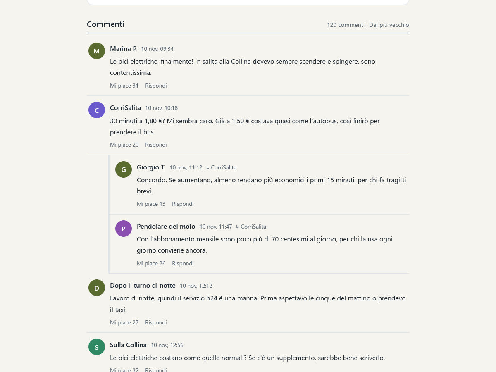
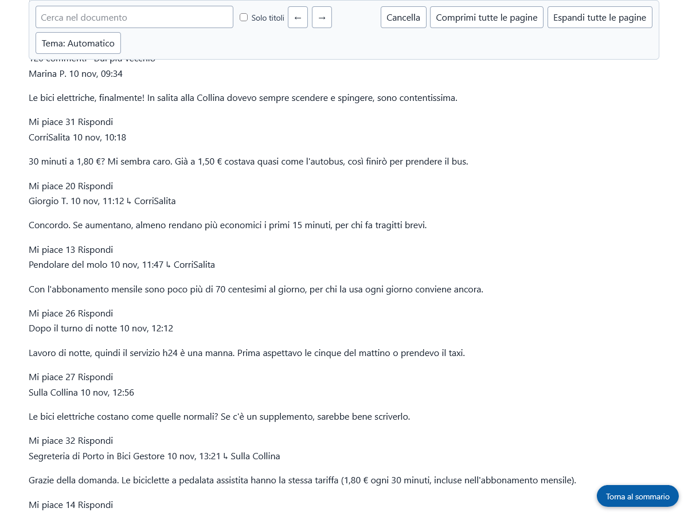

Risultati reali di Grab All Files
Una sezione commenti caricata fino in fondo e salvata in un solo HTML (Gratis)
È stata salvata solo la pagina aperta: una sezione commenti di fantasia che carica altri contenuti scorrendo (circa 120 commenti, con risposte). L’estensione ha fatto scorrere la pagina da sola fino in fondo e ha raccolto in un unico file HTML tutti i 120 commenti caricati. L’aspetto scelto era «Facile da leggere», quindi il file conserva il testo in uno stile uniforme e non il design del sito.
File di output
Affiancati, alla stessa larghezza di finestra


Come è stato ottenuto
- Pagina di origine
- /samples/source/it/comment-thread/
- Estensione
- Grab All Files 5.8.68 (la versione pubblicata negli store)
- Browser
- Firefox 160.0 (Windows 11, headless)
- Piano
- Gratis
- Creato il
- 2026-11-27
- Impostazioni
- Pagine: solo la pagina corrente
- Aspetto: Facile da leggere
- Forma di salvataggio: HTML con indice e ricerca